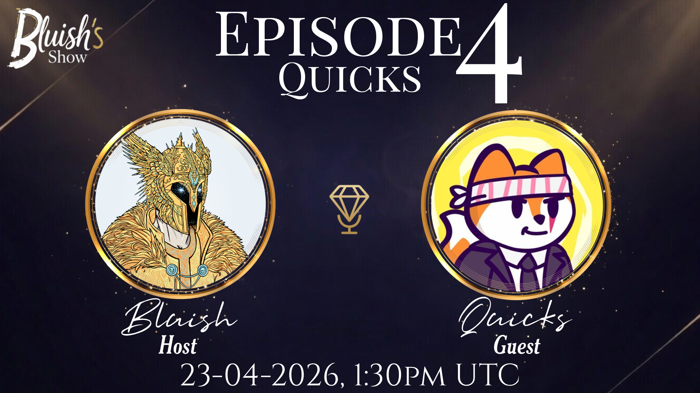
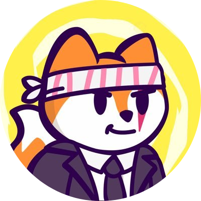

Quicks went from selling shoes and delivering Red Bull at 5AM to becoming one of the most recognizable voices in the Solana ecosystem at Solflare. In this episode, he talks about taking a massive risk, moving across the world with no real plan, and how simply showing up every day opened doors he never expected. It’s a story about betting on yourself — even when it doesn’t make sense yet.
Listen Now on SpotifyQuicks is part of the team at Solflare and someone you’ve probably heard if you’ve spent any time around Solana Spaces. Before all of that, his life looked pretty normal — retail jobs, moving work, and early mornings driving a Red Bull truck. He got into crypto almost by accident, went down the rabbit hole, and at some point decided to go all in. That meant quitting his job, selling everything, and moving to Southeast Asia without really knowing how things would play out. What followed wasn’t some overnight success story — it was consistency. Hosting Spaces every day, helping people, learning everything on the go. Over time, that effort compounded, and he went from community member to working across marketing and business development at Solflare.
"Consistency sounds boring, but it's literally what changed everything for me."
"You never know who someone’s going to become — so why burn bridges?"
"I’m not special. I just kept showing up."
"If you can't control your emotions in this space, it’ll eat you alive."
"Give it a year. Actually commit for a year and your life can change."
"I already feel like I’ve won — everything now is just extra."

X